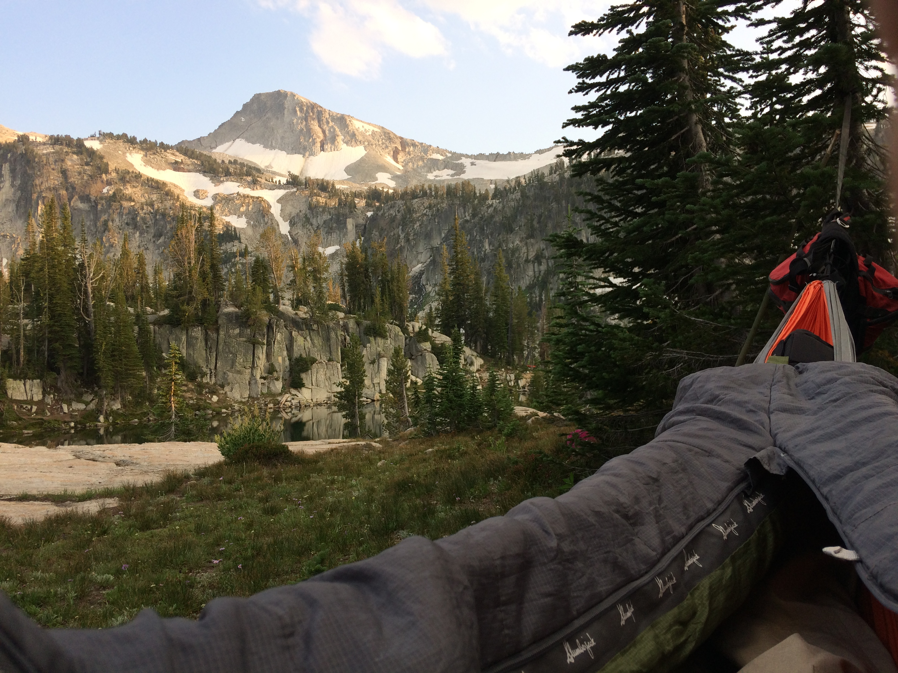
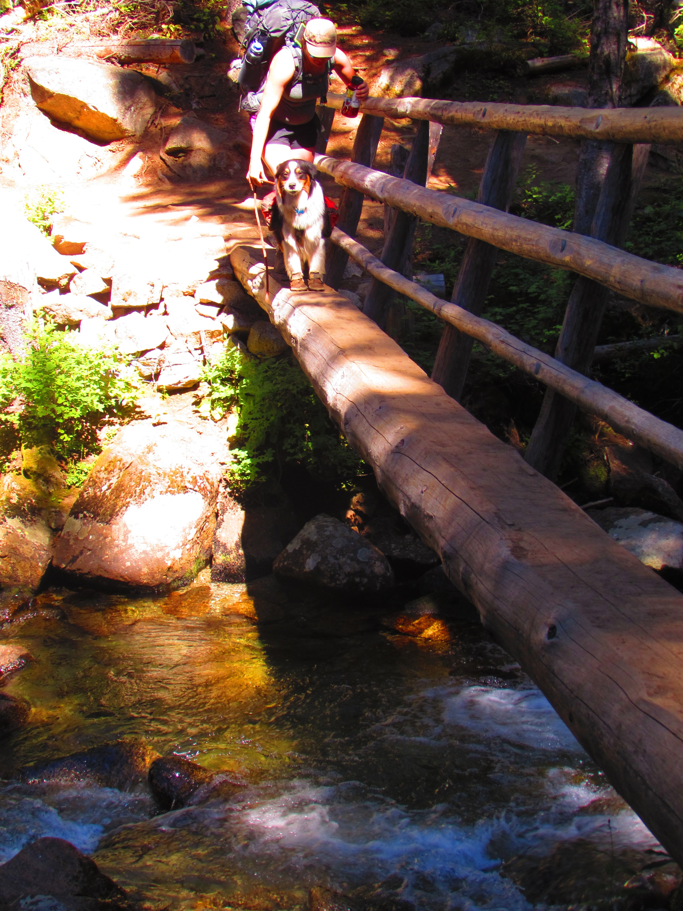
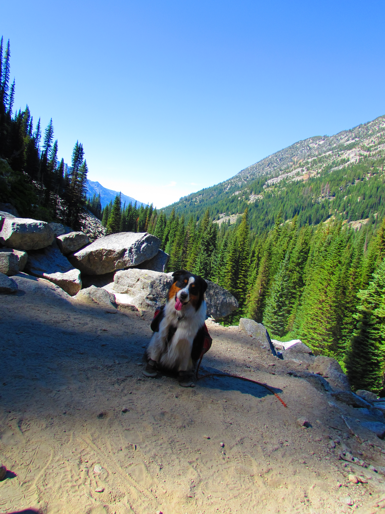
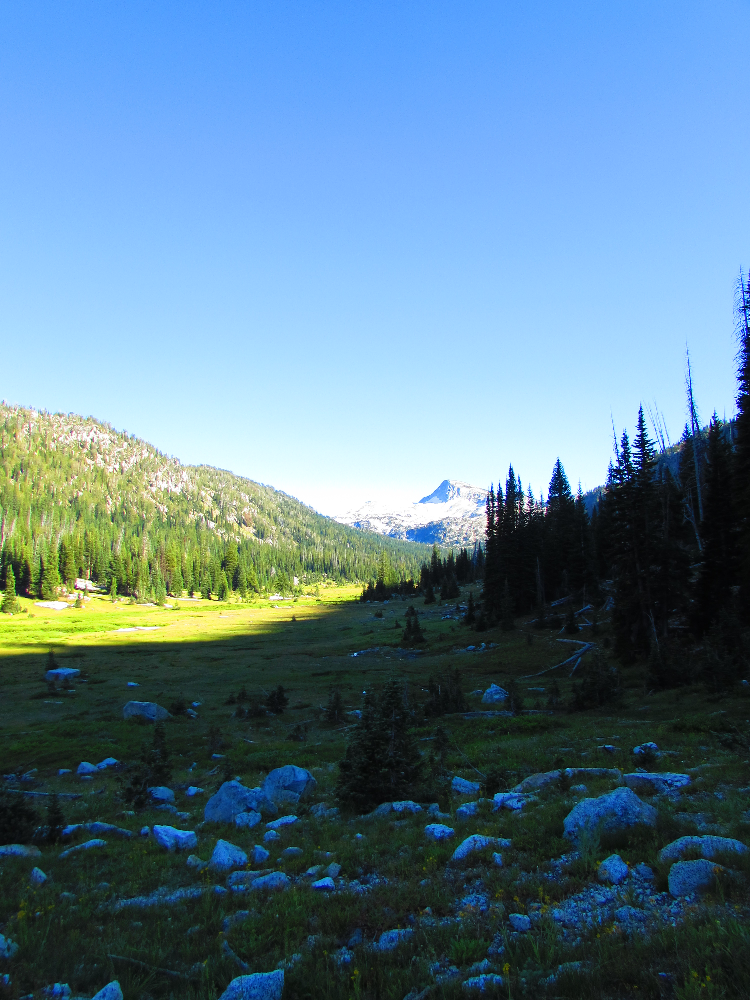

Hike to Eagle Cap
The hike into the Eagle Cap Wilderness was a learning experience to say the least. The hike to Mirror Lake is about 8 miles of one magnificent landscape. The U-shaped valleys that were formed from glaciers remind me of walking through Glacier National Park or Yosemite. The area was once a granitic batholith that solidified and was uplifted. Interestingly, as we were walking up we could see what look like basaltic flows, do to there column features, on top of a granitic outcrop at the top of a ridge. Furthermore, there were dark section of rocks that cut through the granitic rock. These could have been some sources for those lava flows. However, these are just observational extrapolations. If conditions were different and I was not having a heart attack I would have got some samples.
River Crossing
As with most trailheads there is a parking fee and a self issue wilderness pass at the Two Pan trailhead. The beginning of the Lostine trail as a moderate ascent to this point then levels out till the next marker. The river crossing as seen in the image has a will built bridge; however, Finn was a little unsure about crossing.
Switchbacks
Slightly before this marker and a little ways after as seen on the map is the largest switchback section of the whole trail. We found several signs of horses, so as always keep yourself aware of your surroundings especially in this steep rocky switchback sections.
Halfway There
This point is the beginning of the sweet waking section. It pretty flat for about 2 miles beyond this marker. To our surprize this was our first glimpse of Eagle Cap. Finn was happy in the change of scenery as well.

Place along the way
Even though it was flat, Eagle Cap looked so far away. Finn was ready set up camp. If you look at the image the tree covered rise just below Eagle Cap (the peak) is the last ascent to Mirror lake. I was hoping to see some wildlife, but there was a lot people on the tail, do to the eclipse and all that.
Almost There
With the Mirror Lake in site it was time to find a place to set up camp which should be easy, but everyone and their friends decide to up to Mirror Lake. So we decided to truck on a little further, but it was worth it.

Finn started to trail behind he was so tired but did great considering it was a 8 mile hike.
Worth It!
After poking around the lake Katie found a sweet spot with an great view. We set up our hammocks and enjoyed the view. Oh yeah I had a heart attack the next day, but walked out thing it was altitude sickness.